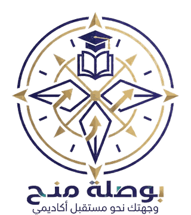

منصة عربية مستقلة ومجانية، أنشئت لتساعد الطلاب والخريجين العرب على الوصول إلى المنح وفرص العمل بلغتهم، دون وسطاء ودون رسوم. نجمع المعلومات من المصادر الرسمية، ونرتبها، ونرشدك خطوة بخطوة حتى تقدّم بنفسك.
ثلاث خطوات، ثم ترى كم منحة تناسب ملفك الآن، مرتبة حسب التوافق، مع ما ينقصك لكل واحدة.
اختر تخصصك
حدّد مؤهلك ولغتك وخبرتك
اختر البلد الذي تريد الدراسة فيه

عن الموقع
بوصلةمِنح
وجهتك نحو مستقبلك الأكاديمي.
منصة عربية مجانية تجمع لك المنح الدراسية وفرص العمل والتدريب في مكان واحد، وترشدك خطوة بخطوة من اختيار التخصص حتى التقديم والسفر.
لماذا أنشأنا بوصلة مِنح؟
معلومات المنح متفرقة بين عشرات المواقع، وأغلبها بالإنجليزية، ومواعيدها تضيع بسهولة. وكثير من الطلاب العرب يدفعون لمكاتب وسيطة مقابل معلومات متاحة مجاناً. هدفنا أن يجد كل طالب عربي المنحة المناسبة له بلغته، ويعرف شروطها وأوراقها وموعدها، ثم يقدّم بنفسه من الموقع الرسمي.
احفظ ما يهمكضع المنح في «مختاراتي» وتابع الأيام المتبقية على إغلاقها.
جهّز ملفاتكاستخدم قائمة الملفات في صفحة كل منحة وأدلة ركن الخبراء.
قدّم من الموقع الرسميكل منحة فيها رابط مباشر لجهتها الرسمية.
مبادئنا
مجاني بالكامللا رسوم ولا اشتراكات، ولا حاجة لإنشاء حساب.
مصادر رسميةنربطك دائماً بالموقع الرسمي للمنحة أو الجهة، لا بوسيط.
خصوصيتك محفوظةمختاراتك ونتائجك تُحفظ على جهازك فقط، ولا نجمع بياناتك.
بلغتككل المحتوى بالعربية، مع الأسماء الرسمية بالإنجليزية للبحث عنها.
تنبيه: بوصلة مِنح دليل إرشادي مستقل، وليس جهة مانحة ولا يمثّل أي جامعة أو حكومة. المواعيد والشروط قد تتغير من سنة لأخرى، فتأكد دائماً من الموقع الرسمي قبل التقديم. ولا تدفع لأي جهة تدّعي أنها «تضمن» لك منحة.
الشريط في كل بطاقة يبيّن أشهر التقديم المعتادة، والإطار الذهبي يحدد الشهر الحالي.
وظائف وتدريب للشباب العربي
برامج خريجين في منظمات دولية، تدريب بحثي ممول، وبوابات توظيف وعمل حر موثوقة تتجدد شواغرها يومياً.
ركن الخبراء
أدلة قصيرة تقرؤها في دقائق، مع قوالب جاهزة للنسخ.
أسرار خطاب الحافز الفائز
لجنة المنحة تقرأ مئات الرسائل. الرسالة التي تُقبل تحكي قصة واحدة مدعومة بأدلة، وتربطها بأهداف المنحة.
بناء الرسالة فقرة بفقرة
افتتاحية من موقف حقيقيابدأ بلحظة محددة جعلتك تختار هذا المجال. تجنب «منذ طفولتي أحلم».
خلفيتك الدراسية والعمليةاذكر إنجازين أو ثلاثة بأرقام: معدل، مشروع، عدد مستفيدين، نتيجة قابلة للقياس.
لماذا هذا البرنامج بالذاتسمِّ مقررات أو أساتذة أو مختبرات محددة واربطها بما تريد تعلمه.
لماذا هذه المنحةاقرأ أهداف الجهة المانحة واربط قيمها بما فعلته فعلاً، لا بما تنوي فعله فقط.
خطتك بعد التخرجخطة واضحة على ثلاث إلى خمس سنوات، وأثرها على بلدك أو مجتمعك.
افعل
التزم بعدد الكلمات المطلوب، وغالباً صفحة واحدة تكفي.
اكتب رسالة مختلفة لكل منحة وغيّر فقرتَي البرنامج والمنحة على الأقل.
اطلب من شخصين قراءتها، أحدهما من خارج تخصصك.
لا تفعل
لا تكرر سيرتك الذاتية سطراً سطراً.
لا تستخدم عبارات عامة مثل «أنا شخص طموح ومجتهد» بلا دليل.
لا تنسخ رسالة من الإنترنت، فلجان المنح تكشف النصوص المكررة.
قالب رسالة حافز بالإنجليزية
Dear Selection Committee,
When [specific moment or problem you witnessed], I understood why [field] matters to my community. That experience is the reason I am applying for the [scholarship name] to study [programme] at [university].
I hold a [degree] from [university], where I graduated with [GPA / rank]. During [job, project or volunteering], I [action you took], which led to [measurable result].
This programme fits my goals because of [specific module, professor or lab]. I want to build skills in [skill 1] and [skill 2], which are not available to me at this level at home.
The values of [scholarship], especially [value, e.g. leadership or public service], match what I have already done: [short proof].
After graduating, I plan to [concrete plan in 3–5 years] in [country], so that [who benefits and how].
Thank you for considering my application.
Sincerely,
[Full name]
نماذج السيرة الذاتية للمنح والدراسات العليا
السيرة الأكاديمية تختلف عن سيرة الوظيفة: التعليم والبحث أولاً، والطول أكبر قليلاً، وكل سطر يدعم طلبك للبرنامج.
أي صيغة تستخدم
سيرة أكاديميةللماجستير والدكتوراه في بريطانيا وأمريكا وأغلب الجامعات. صفحتان للماجستير، وأطول للدكتوراه مع المنشورات.
Europassتطلبها بعض المنح الأوروبية صراحة، مثل DAAD وبعض برامج إيراسموس. أنشئها مجاناً من موقع europass.europa.eu.
سيرة الوظيفةلبرامج الخريجين والتدريب. صفحة واحدة تركز على النتائج والمهارات.
ترتيب الأقسام في السيرة الأكاديمية
البيانات والتواصلالاسم، البريد، الهاتف، رابط LinkedIn. لا تضع الحالة الاجتماعية ولا رقم الهوية.
التعليممن الأحدث إلى الأقدم: الدرجة، الجامعة، السنة، المعدل وترتيبك إن كان مميزاً، وعنوان مشروع التخرج.
البحث والمشاريعالمشاريع البحثية والمنشورات والمؤتمرات، مع دورك في كل منها.
الخبرة العملية والتطوعكل بند يبدأ بفعل ونتيجة: «درّبت 40 طالباً…» أفضل من «مسؤول عن التدريب».
المهارات واللغاتاكتب مستوى اللغة بمقياس واضح مثل IELTS 6.5 أو C1، والبرامج التي تتقنها فعلاً.
الجوائز والمراجعالمنح والجوائز السابقة، ثم اسمَي مرجعين أو عبارة «تُقدَّم عند الطلب».
تفاصيل يلاحظها المراجعون
صيغة تاريخ واحدة في كل السيرة، وأرسلها ملف PDF باسمك.
لا تضع صورة في الطلبات البريطانية والأمريكية، وهي معتادة في Europass وبعض الدول الأوروبية.
هيكل سيرة أكاديمية بالإنجليزية
[FULL NAME]
[City, Country] | [email] | [phone] | [LinkedIn]
EDUCATION
[Degree, Major] — [University], [Year]
GPA: [x/4 or %] ([rank, e.g. top 5%])
Graduation project: [title]
RESEARCH & PROJECTS
[Project title], [Lab or supervisor], [Year]
• [What you did], resulting in [outcome]
WORK EXPERIENCE
[Job title] — [Organisation], [Dates]
• [Action verb + task], which [measurable result]
VOLUNTEERING & LEADERSHIP
[Role] — [Organisation], [Dates]
SKILLS
Languages: Arabic (native), English ([IELTS score / CEFR level])
Technical: [software, tools, methods]
AWARDS
[Award or scholarship], [Year]
REFERENCES
Available upon request
رسالة التوصية
التوصية القوية تأتي من شخص يعرف عملك ويذكر أمثلة محددة. دورك أن تختاره جيداً وتسهّل عليه الكتابة.
كيف تحصل على توصية قوية
اختر من يعرف عملك عن قربأستاذ درّسك أو أشرف على مشروعك، أو مديرك المباشر. المعرفة الحقيقية بك أهم من اللقب الكبير.
اطلبها قبل الموعد بأربعة إلى ستة أسابيعاسأل بوضوح: هل تستطيع كتابة توصية قوية لي؟ وامنحه فرصة للاعتذار.
جهّز له ملفاً صغيراًسيرتك الذاتية، رسالة الحافز، وصف المنحة، الموعد النهائي، وطريقة الإرسال.
ذكّره بمواقف محددةمشروع أنجزته معه، درجة مميزة، مبادرة قدتها. الأمثلة هي ما يجعل التوصية مقنعة.
تابع بلطف واشكرهتذكير قبل الموعد بأسبوع، ثم رسالة شكر، ثم أخبره بالنتيجة.
ما الذي تبحث عنه اللجنة في التوصية
صفة الكاتب ومدة معرفته بك وفي أي سياق.
مقارنتك بزملائك، مثل «من أفضل 5% درّستهم».
مثال واحد على الأقل يثبت كل صفة يذكرها.
ورقة رسمية وبريد مؤسسي وتوقيع.
تنبيه
إذا طلب منك أستاذك كتابة مسودة، اكتبها بصدق ودعه يعدّلها ويرسلها بنفسه. لا ترسل توصية باسم أحد دون علمه.
قالب رسالة توصية بالإنجليزية
To the Selection Committee,
I am pleased to recommend [student name] for the [scholarship name]. I am [title and position] at [institution], and I have known [name] for [period] as [their lecturer / supervisor / manager].
In my [course or team], [name] ranked among the top [percentage] of [number] students I have taught. [He/She/They] stood out for [quality 1]. For example, [specific project or situation and its result].
Beyond academic ability, [name] shows [quality 2, e.g. leadership or integrity]. [Second short example].
I am confident [name] will succeed in [programme] and use this opportunity to [expected contribution]. I recommend [him/her/them] without reservation.
Please contact me if you need further information.
Sincerely,
[Name, title, institution]
[Institutional email and phone]
أسئلة المقابلات البارزة
أغلب مقابلات المنح تدور حول الأسئلة نفسها. حضّر قصصك مسبقاً ورتّبها بطريقة STAR.